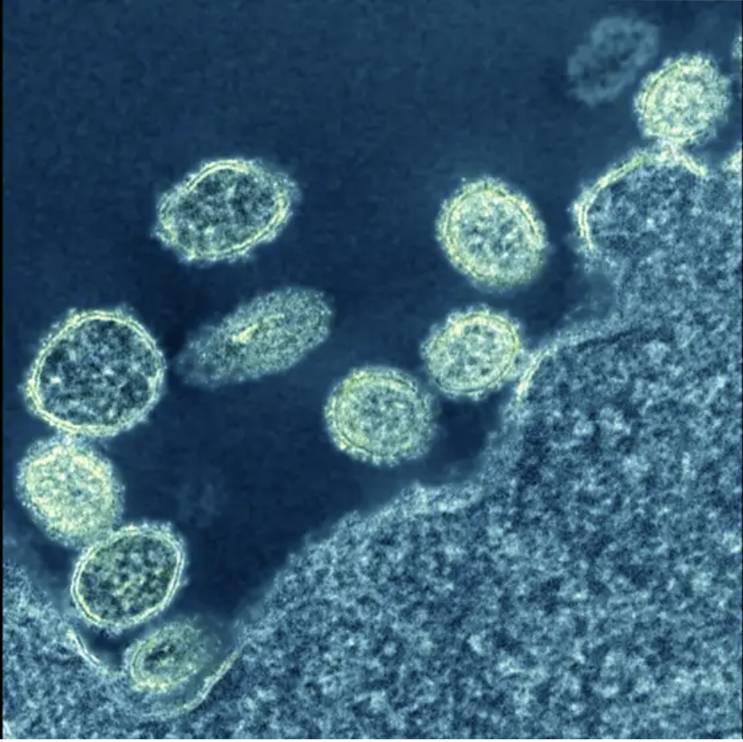

The Racoon's Rodeo
Luckily some of my special interests have actually benefitted me in school or in real life! I can get interested in subjects very easily which makes doing work for said subjects very simple and more often than not fun!
These change less frequently than the special interests in the other two categories, as I usually need the information or the interest for my job as a teacher. Being a teacher allows me to share my special interests with my students and help build their special interests as well! Especially since I have a job opportunity to teach senior level earth and space sciences!
This is by far my oldest and most obsessive special interest, ever since I could see and remember the sky I was obsessed! I wanted to know what was out there, how this all came to be, where we stood in the big wide universe and if we were really the only ones out there. Public schools, especially in small towns, don’t cover much on astronomy as there are usually not enough students to justify a slot in the timetable and the money needed to support a teacher teaching said subject. So I only got the bare minimum in elementary and secondary school, but when I got to university I was able to take actual earth and space science courses along side astronomy courses.
I didn’t really enjoy my astronomy classes because the professor had a very thick Russian accent and I could never fully understand what he was saying. Despite that, I still enjoyed what learned in that class, and continue to use it in my grade 9 space units. A lot of students are very interested in space and astronomy and wish it was offered throughout the secondary school years, so I try to give them a good understanding of what space is, how it started, and where we are going with space programs.


I love germs. Not in the way that I love being sick or being around sick people, but I love studying how germs move, infect, reproduce, and spread through populations. Viral, fungal, bacterial, genetic, I just love learning about what these things are, what they have done in the past to cure them, and what we are doing now to cure them. Originally the plan was to get my teaching degree then go back for a masters in epidemiology, but with the shortage in teachers and OTs (substitute teachers) after the pandemic I scrapped that idea and decided to move home to help out in my community.
The pandemic was a very interesting thing for me, as I loved staying up to date with infection rates, death counts, vaccine process, and comparing them to other worldwide pandemics from history. My family often came to me to ask about different things they would hear in the news, if they should be worried or not, and I always tried to explain what was happening in simple terms to help them understand. At the start to the pandemic I predicted that, when taking other previous worldwide pandemics into consideration (like the Spanish flu and the Black Death), it would take us about 3-5 years to reach herd immunity and for Covid-19 to fade into the background of many normal every day diseases like the Spanish Flu in the 1920s. My prediction was fairly spot on, as we are currently entering the third year of the pandemic and there are still small clustered outbreaks happening worldwide, but that also means we are on track for 3-5 year pandemic.
I have always loved nature and nature documentaries, so it is only natural that I would love climatology and earth sciences. I had to take a climatology and Earth Sciences class in university to get my general science qualification and it was more interesting than I expected. The earth sciences class was interesting in the way that most earth sciences classes are, focusing on rock formations, fossils, and current effects on the earth, all things I’m interested in.
The climatology course was more interesting, and showed a bleak but overall positive outlook on the current state with climates worldwide. As a younger adult, on the cusp of both Millennials and Gen Z, I am very concerned for the state of the planet and our marks left on it. I want to help educate younger generations on how to treat the planet right, and how to repair the damage previous generations have left on it. This includes teaching students about green alternatives to fossil fuel energy, the importance of recycling, to reuse and repurpose something that might be viewed as trash, and to support local businesses that have sustainable practices.


This special interest helped me get through all my lectures in university and it also produced lovely scarves and hats for my friends and family to wear! I have problems focusing retaining information during classes and lectures, I feel like I’m about to explode if I don’t do something with my hands, to keep the fidgety part of my brain occupied while I’m learning, and trying not to distract my peers or teachers. During elementary and secondary school I would draw on the margins of my notes, but several teachers would get angry or frustrated with me, saying I wasn’t paying attention, so I stopped in my later years in high school.
In university I continued to struggle with learning when I didn’t have something to do with my hands, so one day I brought my knitting with me to lecture and knit while I was listening/taking notes, and I felt much more productive when I did this. I always sat in the front and knew that my professors were watching me while they were teaching, but it wasn’t until an education professor asked me to stay after lecture that I got to explain why I did it. They said it was a great way to stay focused and not disturb the students around me, and a much better than watching Grey’s Anatomy during lecture.